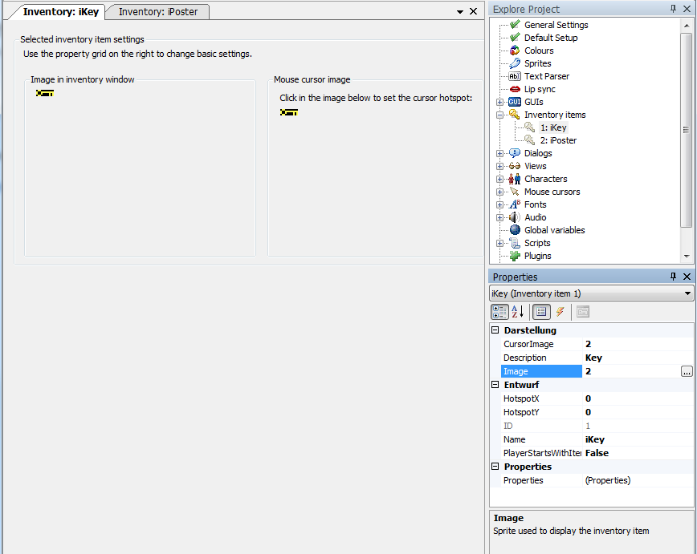

A place to edit Items that can be placed on the inventory by the player.

Cursor Image:
The image number from the Sprite Manager that is displayed as active cursor image when selecting this inventory item from the inventory to use it on other inventory items or somewhere inside your scene. You set the active hotspot of the mousecursor, there where the click from that mouse cursor is detected, by left-clicking on the right image in the inventory item settings. Alternatively you can set the hotspot position by hand with the HotspotX and HotspotY Value, this is explained 3 paragraphs below.
This Cursor Image is usually a bit smaller than the normal image of the inventory item inside the inventory, this is covered 2 paragraphs below.
It is good practise to add a kind of crosshair or a single pixel in any color standing out from the rest of the image (maybe pure red?) and put the click hotspot there so the player knows where he is pointing exactly. Figuring out bad controls is no puzzle!
Description:
The name of the item that is displayed for example on [@OVERHOTSPOT@] when the mouse is over the inventory item still in the inventory.
Image:
The image displayed for the inventory item within the normal AGS inventory. Usually a bit bigger than the mouse cursor image of the inventory item.
HotspotX:
Select the X value of the active cursor image by hand. It's the distance from the left border in pixels. You can also set this value by clicking on the right image in the inventory item settings.
HotspotY:
Select the Y value of the active cursor image by hand. It's the distance from the top border in pixels. You can also set this value by clicking on the right image in the inventory item settings.
ID:
The internal ID of this inventory Item. This value cannot be changed, it can be read only by script with the call InventoryItem.ID.
Name:
The script name of the inventory item. Usually the convention is to start inventory item names with an i, like iKey. This convention sure gets tricky when you give your game characters apple products...
PlayerStartsWithItem:
Is a boolean value that means what it says, it sets whether the player character starts with this inventory item in his inventory or not. Mostly the default setting of no is used.
Within the game the player can pick up and store inventory items into his inventory by interacting with the scene or other characters. You add a new inventory item to his inventory with the cChar.AddInventory(iInvItem) function. When the player uses or gives away the item you remove it from the character's inventory with the cChar.LoseInventory(iInvItem) function. Make sure you check the Mouse.Mode afterwards, especially when the active cursor is the inventory item the player just lost.
See Also: InventoryItem